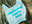

Van werkplaats naar werkruimte.
Hoi, ik ben Casper. Geboren in Delft ('97) en momenteel in mijn element bij Communication and Multimedia Design (Hogeschool Utrecht).
Je vindt in mijn portfolio een gezonde dosis "digitale chaos", maar achter die schijnbare chaos zit een serieuze makers-mindset. Mijn achtergrond in houtbewerking, elektrotechniek en tuinbouw heeft mijn kijk op design gevormd: ik ontwerp niet alleen in pixels, maar denk in tastbare constructies. Of het nu gaat om het bouwen van fysieke installaties, het creëren van sterke visuele identiteiten of het smeden van online communities; ik knutsel net zo graag aan een prototype in de schuur als aan een interface op mijn laptop.
Ik geloof in design dat werkt, voelt en verbinding maakt. Naast mijn projecten ben ik een community-builder in hart en nieren; ik beheer gaming-omgevingen met honderden actieve leden. Dat vraagt om menselijk inzicht, technische handigheid en een flinke dosis creatieve probleemoplossing. Laten we samen iets bouwen.
The Workbench

Generation Plastic Soup
2025

Street Fresh
2024

Samen spelen
2024

Grijpmachine
2024

Kodak
2024

Bomby Bird
2024

Picknicken met Sophie
2023

OSRS Kerst
2023

De Grinch
2023

Vechtclub XL
2023

Hu Begeleidt
2022

Dan maar hier!
2022
Let's Connect
I am always open to discussing new projects, technical collaborations, or simply sharing ideas about craftsmanship and technology.